우선 한줄요약
감성은 한국영화급 신파인데 공부한 알맹이는 공갈빵 수준
1. 도입부 & 지원 동기
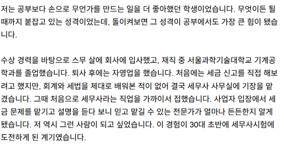
→ 시작부터 감성 팔이 자소서 정석 멘트로 출발한다. 스무 살 입사, 과기대 기공과 졸업, 자영업 테크까지는 그럴싸함.
근데 세금 신고하다 막혀서 세무사한테 기장 맡겼더니 갑자기 '든든한 전문가'가 멋있어 보여서 30대 초반에 세무사 시험에 박았다?
맥락 점프가 시작부터 강하게 들어온다. 보통 이런 건 경찰, 소방, 법조인 같은 소명직에서나 나오는 클리셰지,
세무사 진입 동기로는 영 어색하다. 물론 진짜로 감명받았을 수도 있으니 일단 넘어가 보자.
2. 수험 생활 & 루틴
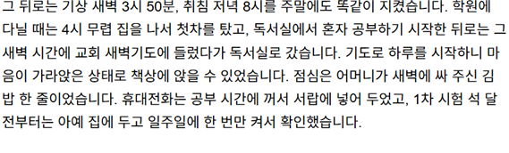
→ 그 뒤에 나오는 새벽기도, 엄마가 싸 준 김밥 한 줄, 폰 잠금 같은 서사는 전형적인 '피눈물 나는 노력' 클리셰다.
전문자격증 수기라기보다는 수능 인간승리 수기 톤에 가까움.
그나저나 저녁 8시 취침에 새벽 3시 50분 기상이면 사실상 8시간 풀숙면 때린 거인데
새벽기상으로 마치 잠 줄여가며 영혼 갈아 넣은 것처럼 포장되어 있지만 실제론 수면 시간 자체는 넉넉함.
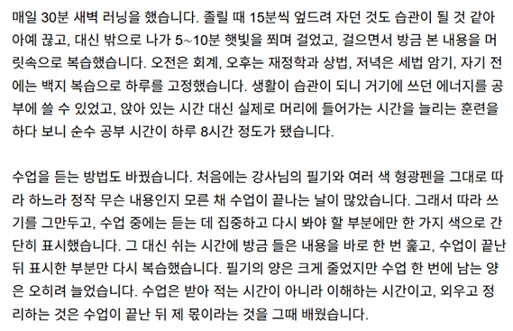
→ 순공 8시간 찍고, 색깔 펜 필기 버리고 수업 이해에 집중했다는 내용. 기초 개념 잡는 단계의 설명으로는 맞다.
근데 다시 생각해 보자. 이 사람 그냥 합격자도 아니고 '한 문제 틀린' 괴물이다.
세무사 시험에서 수업 듣고 이해하는 건 숨 쉬듯 당연한 거다.
100m 8초대에 뛰는 인간한테 비결을 물었더니
"일단 두 발로 뛰는 법을 배웠습니다"라고 답하는 격인데, 여기서부터 슬슬 싸해진다.
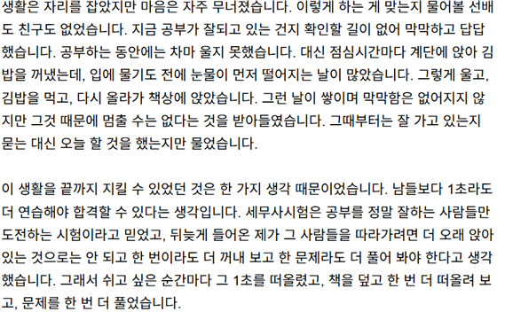
→ 계단에서 김밥 먹다 울었다는 대목은 감정선이 아주 절절하다.
근데 좀 기괴한 게, 세무사 2차는 논술 시험이다.
쟁점 뽑고 법령·판례 대서 사안 포섭하는 걸 기계처럼 반복하다 보면 사람 문체 자체가 딱딱하고 건조해지기 마련인데, 이분은 무슨 신춘문예 등단한 사람처럼 감성 에세이를 기가 막히게 잘 쓰신다.
논리적 출력과 감성적 서사를 자유자재로 오가는 지킬 앤 하이드급 하이브리드 두뇌인가 보다.
3. 5대 공부법 요약
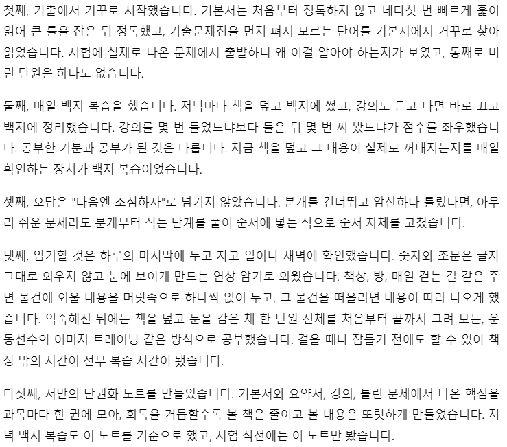
→ 기출 역추적, 백지 복습, 오답 풀이 순서 교정, 이미지 트레이닝, 단권화.
어디 수험서 서문에서 본 듯한 고득점자 방법론은 다 긁어모았다.
문제는 '어떻게'가 쏙 빠져 있다는 거다.
실제 세무사 과목의 어떤 파트에서, 어떤 조문이나 계산 구조가 막혔고, 그걸 어떻게 뚫었는지에 대한 구체적 예시가 단 하나도 없다.
읽는 사람들 머리 아플까 봐 배려심 넘치게 개론만 적어준 걸까?
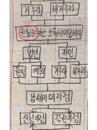
원천징수가 아닌‘원청징수제도’같은 사소한 실수는 천재에겐 상관없는 듯 하다
4. 과목별 공부법
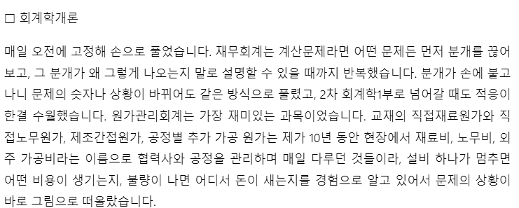
→ 분개가 손에 붙으니 풀렸고, 현장 경험 덕분에 원가관리회계가 그림으로 떠올랐다고 한다.
다시 말하지만 이 사람 거의 만점 받은 수석급이다. 세무사 1차 회계는 시간 싸움이라 문제가 그림으로 떠오르는 수준이 아니라,
보자마자 조건반사로 손이 먼저 나가서 기계적으로 답을 찍어내야 시간 내에 다 푼다.
"이해가 돼서 풀렸다"는 설명과 "하나 틀린 초고득점" 사이에는 태평양만 한 간극이 있다.
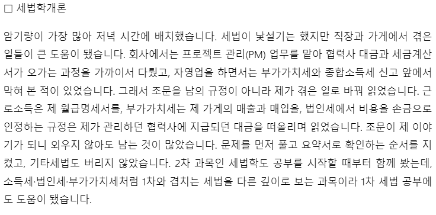
→ 본인 직장·자영업 경험에 빗대서 조문을 이해했다고 한다.
스토리텔링은 참 좋은데, 세법 해본 사람은 알겠지만
'조문 취지를 이해하는 것' 과 '객관식 말문제 함정을 피하고 계산문제 와꾸에 숫자 때려 넣는 것'은 완전히 다른 영역이다.
개념 이해와 문제 풀이 숙달은 요구하는 능력치 자체가 다른데, 정작 점수로 직결되는 후자의 훈련 과정이 통째로 증발해 있다.
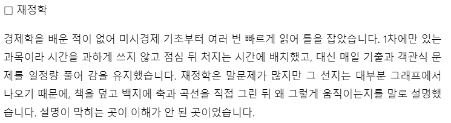
→ 여기는 분량부터 확 줄어든다. 경제학 노베이스인데 미시경제를 '빠르게 여러 번 읽어 틀을 잡았다'고?
미시경제 해본 사람은 알겠지만, 빠르게 읽어서 틀 잡으면 실전 문제 풀 때 대가리 다 깨진다.
가격탄력성, 소득탄력성, 교차탄력성 같은 기초 개념부터 대체효과·소득효과 발라내는 것까지
초보자가 피 토하는 구간이 한둘이 아닌데 그런 악명 높은 디테일에 대한 언급이 0이다.
게다가 시험장에서 그래프 그려가며 원리 따지고 있으면 시간 다 털린다.
초고득점자 수기인데 극복 과정이 무슨 교양 과목 패스한 사람처럼 대충 생략되어 있다.
신조차 모독할 천재라서 그런지 우리가 다 그정돈 할줄 안다고 써서 생략했나보다.
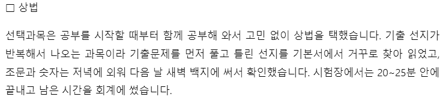
→첫해에 봐 둔 게 있어서 골랐고, 기출 돌리고 조문 외웠다고 끝이다.
이상할 정도로 구체성이 없다. 회사법이든 어음수표법이든 수험생들이 학을 떼는 파트가 있기 마련인데,
어떤 조항에서 낚였고 어떻게 정리했는지 수험생이라면 당연히 튀어나올 법한 디테일이 전무하다.
결론
그래서 한 문제 빼고 다 맞히는 실력은 대체 어디서 생긴 거임?
다 읽었는데 결국 핵심이 없음.
새벽 몇 시에 일어났는지, 김밥은 누가 싸 줬는지, 계단에서 어떻게 울었는지는 존나 선명함.
근데 정작 뭘 몰랐고, 어디서 틀렸고, 그걸 어떻게 고쳤는지는 갑자기 안개가 낀다.
김밥 먹는 장면은 4K 풀영상인데 성적 올리는 과정은 죄다 통편집임.
특히 재정학은 경제학 노베라면서 "빠르게 읽어 틀을 잡았다" 다음에 바로 "감을 유지했다"로 넘어감. 감을 유지하기 전에 감이 생기는 장면부터 보여 줘야 되는 거 아님?
"설명이 막히는 곳이 이해가 안 된 곳이었습니다." -> 당연히 막히는곳이 이해가 안되는곳이겠지
섹스를 안해본 사람은 아다다. 라는 말이랑 뭐가다름??
그래, 거기까지는 알겠음. 그래서 막혔을 때 뭘 했냐고. 그다음 문장이 나와야 되는데 거기서 문단이 끝남.
결론적으로 이 글은 "얼마나 고생했냐"에는 장문 서술형인데,
"어떻게 그렇게 잘하게 됐냐"에는 단답형임. 생활고와 눈물은 4K인데 고득점 과정만 모자이크 처리돼 있다.
특히 24년 수석이랑 비교하면 더욱 극명해지는데
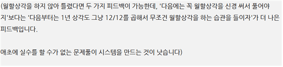
자기가 실제로 겪은 실수와 그걸 교정한 기계적 메커니즘이 명확하게 나옴.
음식점으로 비유하자면
음식점으로 비유하면 미슐랭 3스타 비결을 물었더니 새벽 시장에서 대파 붙잡고 운 썰만 존나 풀고,
불 조절과 양념 비율은 “고기를 사랑했더니 됐습니다”로 퉁친다는거임
제육 태워 먹던 사람이 어떻게 달라졌는지 물었는데, 조리 과정은 통째로 생략되고 갑자기 3스타짜리 제육이 나옴.
그래서 기자가 달달 볶아서 얻어낸 비법이 무려 ‘소거법’으로 맛없는 양념을 지웠더니 완성됐다거임, 역시 천재는 다른가봄
그저 초특급 천재 세무냥이님 응원하면 개추
댓글
수집 당시 댓글 113개
ㅇㅇ · 11.14 00:30:20
인천폭주딸배 · 11.14 00:33:08
· ㅇㅇ · 11.14 00:41:37
· ㅇㅇ · 11.16 09:41:30
ㅇㅇ · 11.14 00:50:00
ㅇㅇ · 11.14 00:55:04
ㅇㅇ · 11.14 01:08:02
ㅇㅇ · 11.14 01:09:29
· ㅇㅇ · 11.14 02:13:06
· ㅇㅇ · 11.15 22:54:08
ㅇㅇ · 11.14 01:52:10
ㅇㅇ · 11.14 03:23:12
ㅇㅇ · 11.14 07:09:15
WakandaHanzo · 11.14 07:41:07
ㅇㅇ · 11.14 07:42:49
ㅇㅇ · 11.14 10:18:28
ㅇㅇ · 11.15 22:46:25
ㅇㅇ · 11.15 22:47:40
ㅇㅇ · 11.15 22:48:24
봇치쟝 · 11.15 22:49:30
· ㅇㅇ · 11.15 23:27:48
ㅇㅇ · 11.15 22:49:59
ㅇㅇ · 11.15 22:50:07
· ㅇㅇ · 11.15 22:50:26
· ㅇㅇ · 11.15 22:55:25
· ㅇㅇ · 11.15 23:01:10
ㅇㅇ · 11.15 22:53:11
· ㅇㅇ · 11.15 22:53:26
· ㅇㅇ · 11.15 22:56:35
Redpill_はる · 11.15 22:53:15
· 공정성장 · 11.15 23:04:06
ㅇㅇ · 11.15 22:53:19
ㅇㅇ · 11.15 22:56:31
· ㅇㅇ · 11.15 22:57:38
· ㅇㅇ · 11.15 22:57:48
ㅇㅇ · 11.15 22:57:00
ㅇㅇ · 11.15 23:00:41
ㅇㅇ · 11.15 23:00:48
· ㅇㅇ · 11.15 23:14:41
· ㅇㅇ · 11.15 23:15:36
ㅇㅇ · 11.15 23:06:04
· ㅇㅇ · 11.15 23:08:22
ㅇㅇ · 11.15 23:06:37
ㅇㅇ · 11.15 23:08:59
ㅇㅇ · 11.15 23:11:05
할로이 · 11.15 23:11:06
ㅇㅇ · 11.15 23:11:15
· ㅇㅇ · 11.15 23:13:46
· ㅇㅇ · 11.15 23:14:58
· ㅇㅇ · 11.15 23:20:21
· ㅇㅇ · 11.15 23:41:17
ㅇㅇ · 11.15 23:16:37
ㅇㅇ · 11.15 23:18:19
나도 모르겠어 · 11.15 23:18:23
· ㅇㅇ · 11.15 23:32:19
· ㅇㅇ · 11.16 12:07:53
ㅇㅇ · 11.15 23:19:01
· ㅇㅇ · 11.15 23:20:15
ㅇㅇ · 11.15 23:21:43
ㅇㅇ · 11.15 23:23:39
ㅇㅇ · 11.15 23:24:50
· ㅇㅇ · 11.15 23:25:17
ㅇㅇ · 11.15 23:29:04
ㅇㅇ · 11.15 23:31:56
ㅇㅇ · 11.15 23:32:25
워렌버핏 · 11.15 23:35:03
ㅇㅇ · 11.15 23:35:30
ㅇㅇ · 11.15 23:40:27
· ㅇㅇ · 11.15 23:43:56
ㅇㅇ · 11.15 23:40:35
· ㅇㅇ · 11.15 23:43:49
ㅇㅇ · 11.15 23:43:10
ㅇㅇ · 11.15 23:51:31
ㅇㅇ · 11.15 23:54:26
환란 전 교회 휴거 · 11.15 23:58:07
ㅇㅇ · 11.16 00:02:52
ㅇㅇ · 11.16 00:05:10
ㅇㅇ · 11.16 00:24:55
ㅇㅇ · 11.16 00:35:23
ㅇㅇ · 11.16 00:56:34
Enter · 11.16 01:10:24
ㅇㅇ · 11.16 02:18:40
ㅇㅇ · 11.16 02:22:31
ㅇㅇ · 11.16 03:02:57
ㅇㅇ · 11.16 03:49:50
· ㅇㅇ · 11.16 03:51:58
· ㅇㅇ · 11.16 09:01:59
ㅇㅇ · 11.16 05:27:14
micro멍거 · 11.16 05:38:37
· ㅇㅇ · 11.16 09:05:43
· ㅇㅇ · 11.16 09:09:35
· micro멍거 · 11.16 09:26:23
말은적게훈련은많이 · 11.16 06:49:27
ㅇㅇ · 11.16 08:25:22
ㅇㅇ · 11.16 08:33:23
ㅇㅇ · 11.16 08:42:40
· ㅇㅇ · 11.16 09:30:37
· ㅇㅇ · 11.16 10:48:53
ㅇㅇ · 11.16 08:56:55
ㅇㅇ · 11.16 13:05:19
ㅇㅇ · 11.13 23:12:52
· ㅇㅇ · 11.13 23:19:21
ㅇㅇ · 11.13 23:21:18
ㅇㅇ · 11.13 23:23:22
ㅇㅇ · 11.13 23:24:00
· ㅇㅇ · 11.13 23:25:07
· 김종필 · 11.13 23:25:08
· ㅇㅇ · 11.13 23:31:33
· ㅇㅇ · 11.14 00:46:25
· ㅇㅇ · 11.14 01:08:44
· ㅇㅇ · 11.14 02:12:29
· ㅇㅇ · 11.14 09:00:24
고도리치 · 11.13 23:32:52